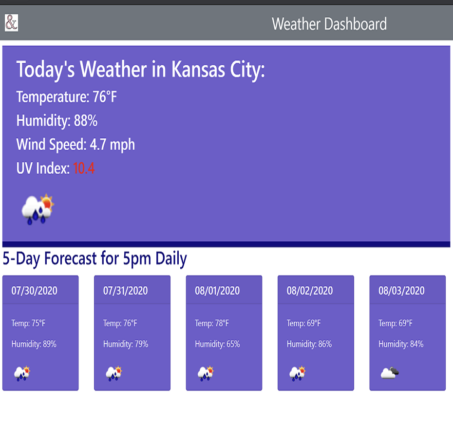
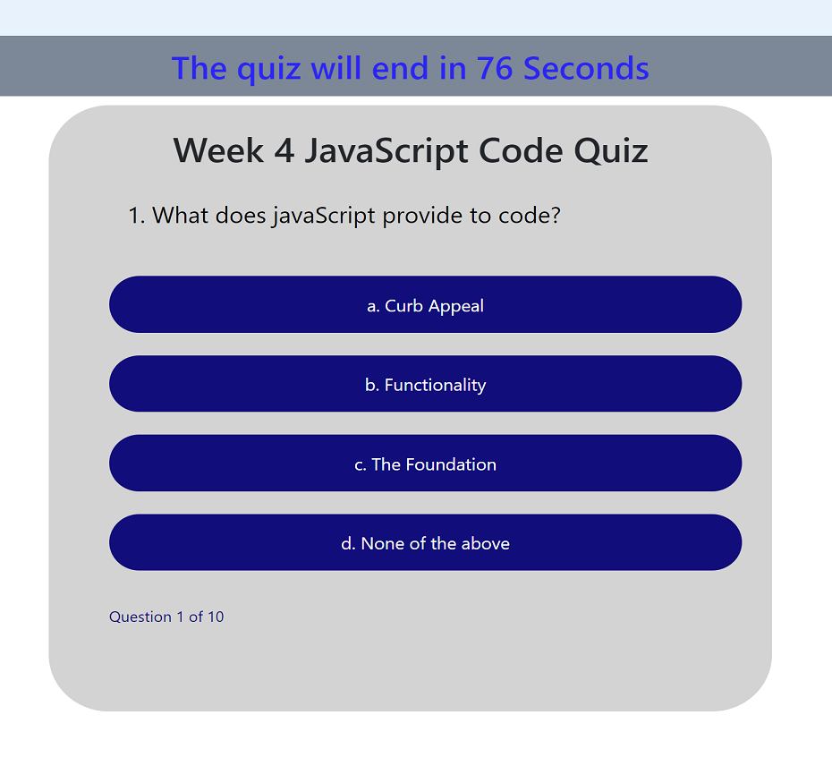

Portfolio of Julie Ann Schaub
Home
Portfolio
Contact
Repository Spotlight On ...
Project Title: Spacex/NASA Flight Data - Group Project 1
Description of Project: This interactive site provides information about NASA, SpaceX and their relative flight data information. Explore the history of NASA and SpaceX on the following pages with their interactive timelines that include links for additional organizational and mission detail. For in-depth details of select NASA flights and all SpaceX flights, pick a mission from the dropdown and click the link in the data table.
Technologies Used: HTML, Bulma, CSS, Javascript, jQuery, AJAX, API Calls NASA, SpaceX and DarkSky, moment.js
Grade: A-
Link to GitHub:
https://github.com/reidbuckingham48/spacex-nasa-flight-data
Link to Deployed Project:
https://reidbuckingham48.github.io/spacex-nasa-flight-data/

Project Title: Weather Dashboard
Description of Project: This interactive weather app displays temperature, humidity, wind speed, UV index and a weather icon for the current day. The five-day forecast displays the projected temperature at 5pm local time, humidity and weather icon. Users enter a city and click search to display results. Past cities searched are stored and displayed underneath.
Technologies Used: HTML, Bootstrap, CSS, JavaScript, jQuery, OpenWeather API Call, Ajax
Grade: A-
Link to GitHub:
https://github.com/JulieAnn2330/weather-dashboard
Link to Deployed Project:
https://julieann2330.github.io/weather-dashboard/

Project Title: Code Quiz
Description of Project: This timed, interactive quiz tests students' knowledge of JavaScript fundamentals. Answer a question correctly and get a point; answer incorrectly and lose a point and 10 seconds off the clock. At the end of the quiz the user gets a page displaying their score.
Technologies Used: HTML, Bootstrap, CSS, JavaScript, moment.js
Grade: A+
Link to GitHub:
https://github.com/JulieAnn2330/code-quiz
Link to Deployed Project:
https://julieann2330.github.io/code-quiz/
Project Title: Work Day Scheduler
Description of Project: This project was for an online planning calendar. The calendar was supposed to show the hours from 9am to 5pm. I extended this from 8am - 8pm for further flexibility. The calendar is intuitive, click in the box and add your text, the save button will save the text, even upon refresh or closing the browser and coming back. The delete button will delete the item from the calendar completely. This last button I added for convenience. The blocks of time will recognize if they are in the past, present or future and are color coded thusly.
Technologies Used: HTML, Bootstrap, CSS, JavaScript, moment.js, jQuery
Grade: A
Link to GitHub:
https://github.com/JulieAnn2330/work-day-scheduler
Link to Deployed Project:
https://julieann2330.github.io/work-day-scheduler/
Created by Julie Ann Schaub for the University of Kansas Full Stack Bootcamp, August 2020